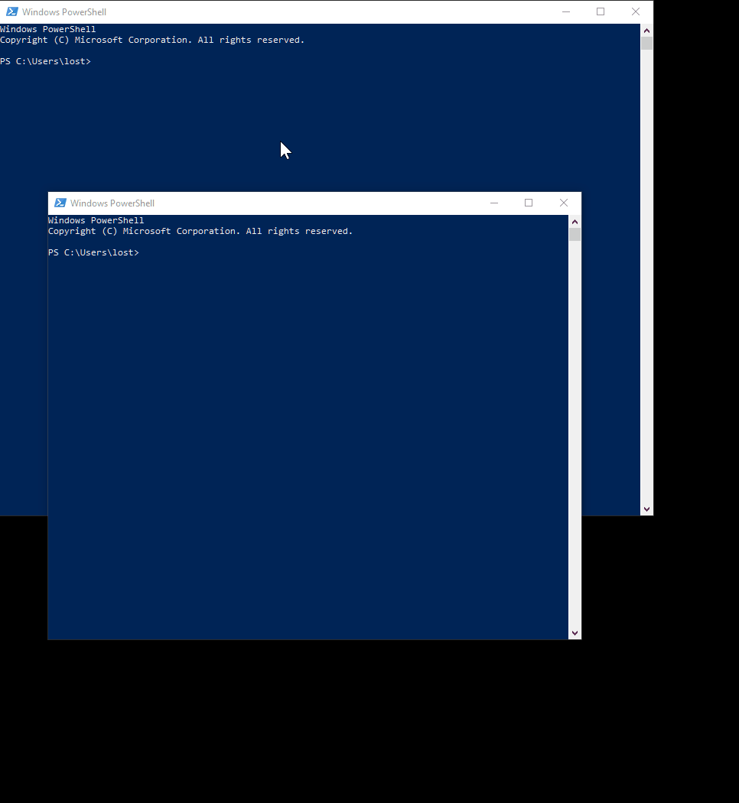
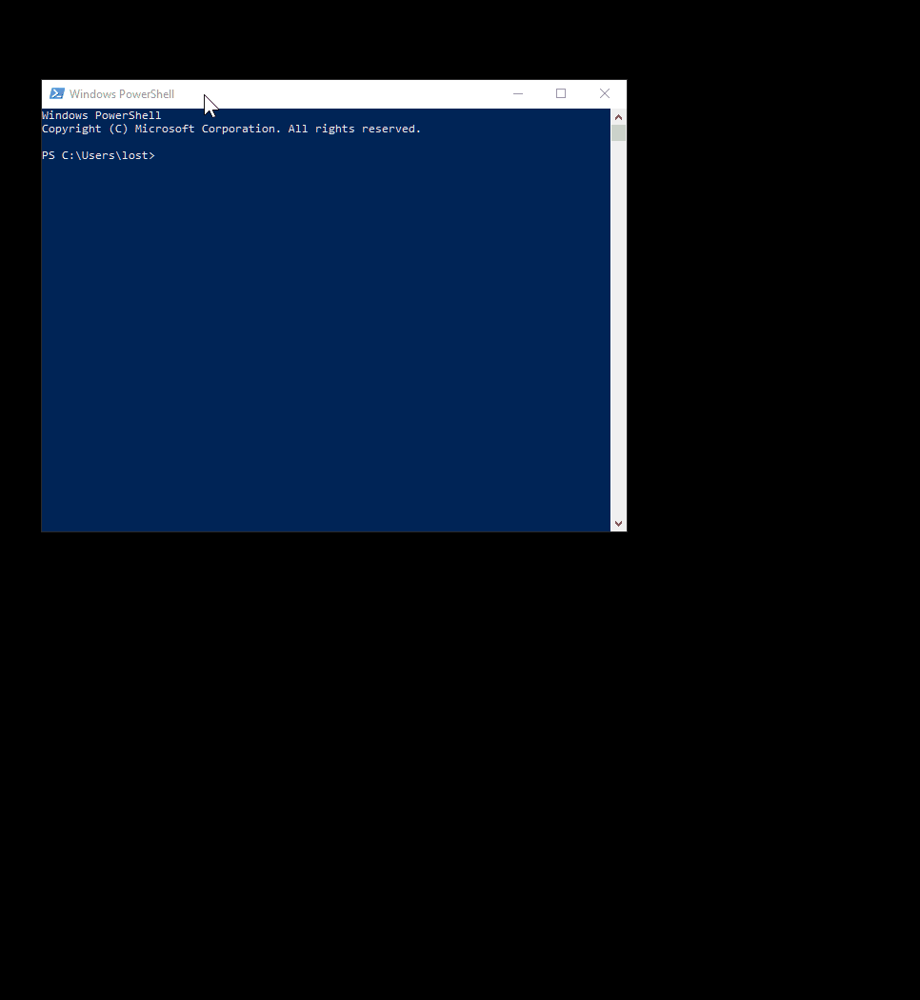

What's new in V2
- Tabs
- Stacking
- Permanently visible elements
- Layout Helpers
- Keyboard improvements
- Out of box layouts
- Other
Tabs
You can add <zones:WindowTabs> element to show tabs over a zone, that has multiple windows.
 The full syntax is:<zones:WindowTabs VisibilityCondition="AlwaysVisible"
ItemsSource="{Binding Windows, Source={x:Reference YourZoneName}}" />
You must mark you zone like this: <zones:Zone x:Name="YourZoneName"/>
VisibilityCondition can have one of the following values:- MultipleItems (default) - only appear when there are multiple windows.
- AlwaysVisible - tabs are always visible.
- OneItem - tabs appear only when there's at least one window open.
ItemsSource can also combine windows from multiple zones into a single list of tabs using its extended syntax (example from updated Large Horizontal Left)
<zones:WindowTabs>
<zones:WindowTabs.ItemsSource>
<CompositeCollection>
<zones:ZoneElement Content="{Binding ViewModel, Source={x:Reference SideStack}}" />
<CollectionContainer Collection="{Binding Windows, Source={x:Reference SideSingle}}" />
</CompositeCollection>
</zones:WindowTabs.ItemsSource>
</zones:WindowTabs>
You can have as many CollectionContainers and ZoneElemens as you want.
Note:
ZoneElement is useful for stacked zones.
Stacking
In V2 you can make windows arrange themselves inside your zones using WPF Panels.Only
UniformGrid currently has useful behavior, that is to allow automatic vertical or horizontal stacking of windows.

Here's how you can do it:
<zones:Zone>
<zones:Zone.Layout>
<ItemsPanelTemplate>
<UniformGrid Columns="1" />
</ItemsPanelTemplate>
</zones:Zone.Layout>
</zones:Zone>
Columns=1 ensures, that you have a vertical stack. To make a horizontal stack, use Rows=1.
You can combine different values of Columns and Rows to make a tile grid.
Permanently visible elements
Your custom layouts are now always visible on the screen (in V1 they would only appear when dragging a window with mouse). That means, that you can add any WPF graphical elements to your layouts, that are visible permanently. For example, you could add text with TextBlock, images with Image, or any other WPF control to you screen with a custom layout. See an example in a blog post about adding a resize grip.Layout Helpers
Hints
In V1 some out of box layous had graphical hints for where a window will be dropped. Those are only needed when there's drag in progress. To simplify hiding graphical elements like these, a new property was added, that can be attached to any element to indicate it should disapper when no window is being dragged. To mark your graphical element as a hint, add zones:Layout.IsHint="True" property to it like this (from OOB Horizontal layout):<Border Width="160" Height="160" Background="#44F" zones:Layout.IsHint="True">
Percentage sizing
We've introducedPercentageConverter, that you can take advantage of in your layouts.
It allows you (but not limited to) to set zone size as a percentage of the current size of another layout element.
<zones:Zone MinWidth="160"
Width="{Binding ActualWidth, ElementName=SomeOtherNamedLayoutElement, Converter={StaticResouce PercentageConverter}, ConverterParameter=25}" />
Keyboard improvements
We fixed a number of bugs in keyboard movement behavior, and made it more natural.Out of box layous
Most of the out of box layouts now take advantage of the new layout features.- Large and Wide layouts have tabs, that cover main area, and use stacks for their sides.
- Main zones of vertical layous are now tabbed.
- We introduced new OOB Horizontal layout, that replaces Small Horizontal layous. Its side zones collapse and expand dynamically. Its main zone is tabbed as well.
Other
- fixed empty space around some windows
- layouts from previous version should be upgraded; they will still work, but a warning will be issued every time one is loaded; see the upgrade guide